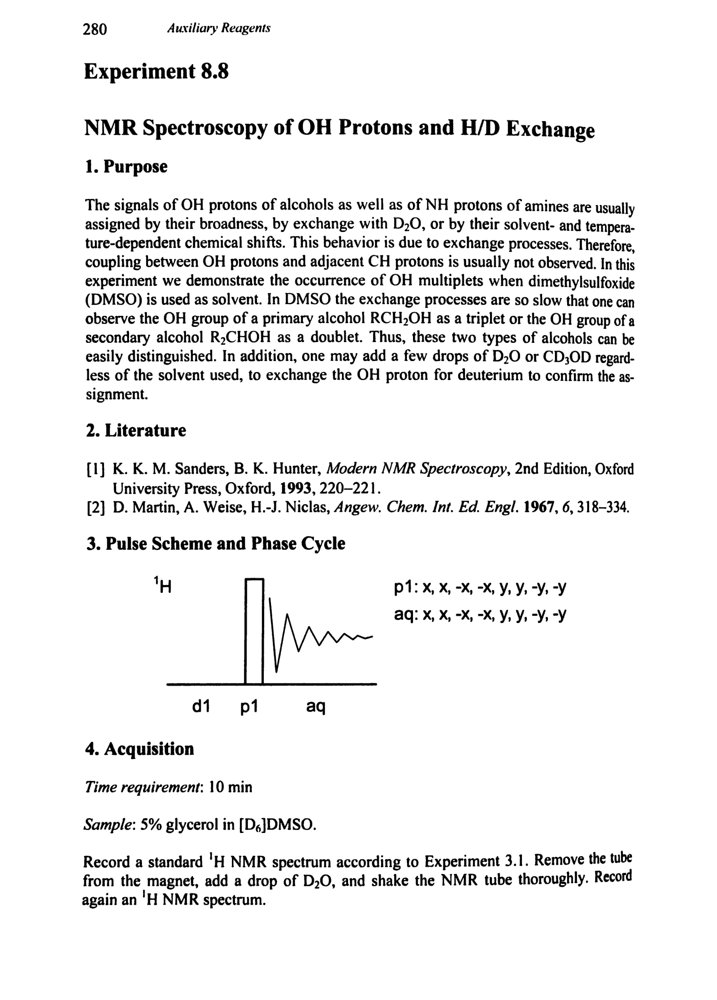
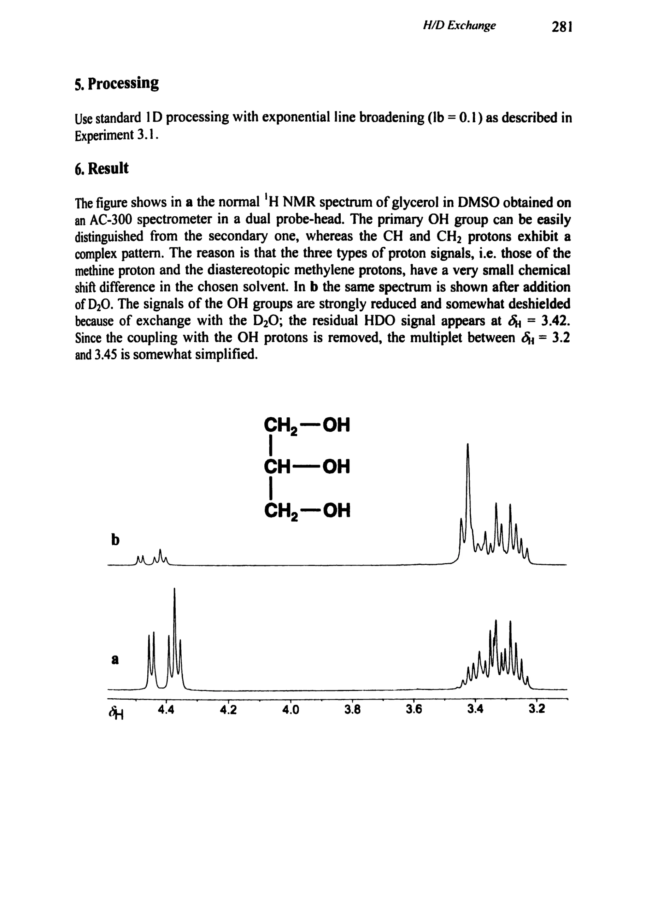
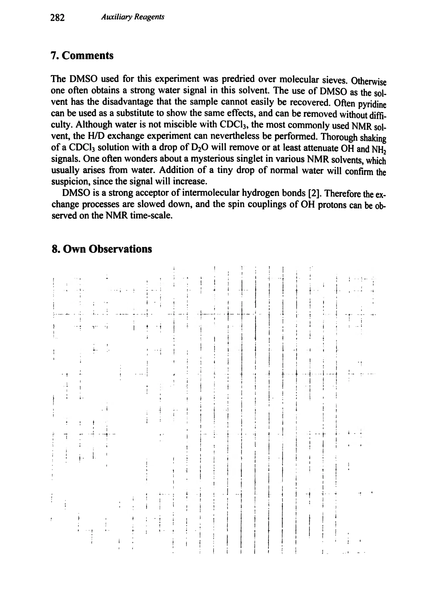

Experiment 8.8
NMR Spectroscopy of OH Protons and H/D Exchange
OH 质子的 NMR 波谱与 H/D 交换
PDF 295–297 · 原书 280–282 · Auxiliary Reagents, Quantitative Determinations, and Reaction Mechanisms



核磁共振实验方法、脉冲序列与谱图实践
Experiment 8.8
OH 质子的 NMR 波谱与 H/D 交换
PDF 295–297 · 原书 280–282 · Auxiliary Reagents, Quantitative Determinations, and Reaction Mechanisms


